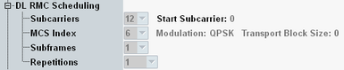

DL RMC Connection Settings
The parameters in this section configure a 3GPP-conform DL RMC. The settings apply if "Scheduling Type" = "DL RMC".
There are dependencies between the settings. Configure the settings from the top to the bottom.
For valid parameter combinations, see "Scheduling Type DL RMC".

DL RMC connection settings
Number of scheduled subcarriers and offset of the first scheduled subcarrier from the edge of the transmission bandwidth.
Remote command:MCS index value. It determines the modulation scheme and the transport block size, which are displayed for information.
Remote command:Number of subframes.
Remote command:Selects the number of NPDSCH repetitions.
Remote command: